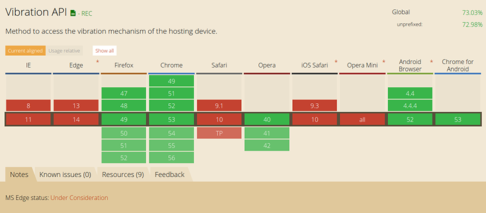

Let's shake baby! shake.js is cool framework that uses Vibrate API from HTML5 to make smartphones shake up in different ways. You can use shake.js in your project to make your app more interactive
Click and try! Only on smartphones or computers with vibrate support
shake.tremble('zigZig');
shake.tremble('continous');
shake.tremble('sms');
shake.tremble('badum');
shake.tremble('alarmClock');
shake.tremble('sos');
shake.tremble('intruders');
shake.tremble('annoying');
shake.tremble('doorBell');
You can download from github and import on your project
<script src="shake.js"></script>
shake.js has only one function named tremble(), you can manipulate vibration modes through this function.
tremble('argument')
The function accept one argument from its list, you can check it out below
//List of possible values
shake.tremble("zigZig");
shake.tremble("continous");
shake.tremble("sms");
shake.tremble("badum");
shake.tremble("alarmClock");
shake.tremble("sos");
shake.tremble("intruders");
shake.tremble("annoying");
shake.tremble("doorBell");
The site CanIUse shows browser support for this functionality
